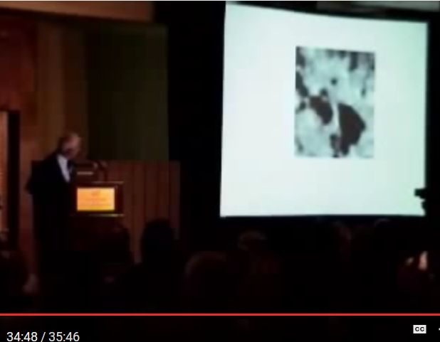
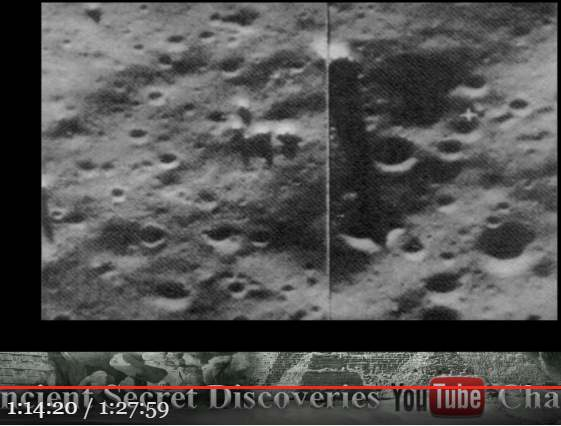
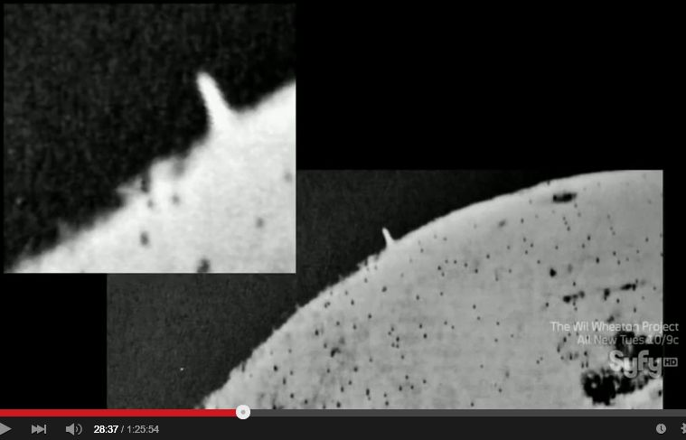
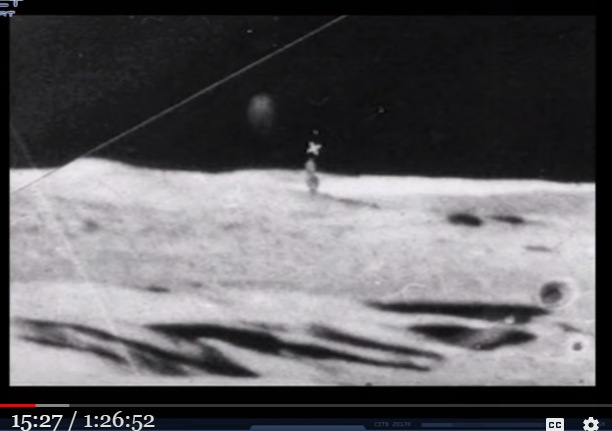

月面の巨大な塔やブリッジの正体
更新
・（2019-07-14）追加。この件に関する情報を追加。 ・（2019-02-03）追加。月面の橋の正体がはっきりと判明した。 ・（2019-02-01）完成。 ・これに関する NASA の見解を追加。 ・ついでに過去記事で記載し忘れていた塔やブリッジの正体を明確に記載。 ・（2017-09-26）追加。 ・過去記事で、・つい最近、この半世紀前から話題になっていた「月面の巨大な塔やブリッジ」の正体について思い当ったので、記録しておく。 Ref: 月面の巨大な塔やブリッジの正体 （途中：その2） (2015-02-19)と述べたまま、説明が億劫で放置していたが、とっくの昔に誰かがこの正体について以下と同様の説明をしているとは思うが…。 Ref: 月面の巨大な塔やブリッジの正体 （途中：その2） (2015-02-19)と予想していた通り、画像分析の専門家（たぶん）がほぼ同様の見解を発表している解説動画を見かけた。放置していた説明の手間が省けて大助かり…w ・誰も過去記事を覚えていない筈なので、その解説動画の紹介の前に、散らばっていた関連の過去記事を丸ごと引用しておく。丸ごと引用するのは問題の塔やブリッジの静止画を見るためにいちいち、リンク先にジャンプする手間を省くため。 ・もっとマシなブリッジの写真も見かけた記憶がある（過去記事で紹介したような気がするが見つからない）が、それらを見かけたら後日、追加するかも。月面のブリッジのイラストの元となった古い資料？
はじめに
・タイトルの件の参考となりそうな動画を見かけたが、その詳細はまだ調べていない。とりあえず、記録しておく。抜粋
・5:47 あたり。ドキュメンタリー動画（58:24）
・National Geographic Aliens exist on the moon 2015 Documentaries 2015 Documentary Films HD関連の本
George Leonard, "Somebody Else is on the moon" (2016-01-16）
月面のブリッジの写真の例
・なお、過去記事で月面のブリッジについて言及して放置したままだが、そのブリッジ（の一つ？）らしき写真が上の動画で提示されていた。それが下。  Ref: John Lear 主張する「月面の構築物」の写真 (2016-01-05）ソ連の探査機が撮影した「月面の塔」 （途中：その1）
はじめに
… … … …抜粋（デタラメ）
・1:14:20 から。動画の再生開始時刻を設定済み。 … … … … 動画（1:27:59）
・Advanced Ancient Technology That Still Baffles Scientists Todayコメント
… … … (2017-08-07)
月面の巨大な塔やブリッジの正体 （途中：その2）
What's New
・（2015.05.29 追加）説明が面倒くさくて先延ばししてきたが、完全に忘却しそうなので再開。はじめに
・月面の巨大な塔の写真を何度か Web で見かけたことがある。この塔は半世紀も昔の新聞記事にも写真つききで載っており、その切り抜き記事を Web で見かけたこともある（比較的最近になって撮影された塔の写真もみかけるが）。 ・さらに月面にある筈の自然の奇観としての巨大なブリッジのイラストも半世紀前の子供向けの科学雑誌のイラストなどに登場していたらしい。そのイラストも以前、Web で見かけた。これらの写真やイラストは保存していないのでここでは引用できないが、探せば見つかる筈（だが面倒なので後回し）。 ・さて…。これらの過去に話題となった月面の巨大な塔やブリッジは Google Moon の画像にはでてこない。これらの塔やブリッジはどうなったのだろうか？ 塔は写真があったがが、ブリッジはイラストだけだったので、ブリッジは誤認だったのだろうか？ （半世紀前のイラストのブリッジの他に比較的最近になって月面写真から見つけ出されたブリッジらしき映像もあるが、それはおまけの話として後述する予定） ・つい最近、この半世紀前から話題になっていた「月面の巨大な塔やブリッジ」の正体について思い当ったので、記録しておく。とっくの昔に誰かがこの正体について以下と同様の説明をしているとは思うが…。 (2015.02.19)
（以下、 2015.05.29 追加分）はじめに
・まず、月面の巨大な塔を撮影した写真を紹介した上で、その塔の正体（推定）を説明する。巨大ブリッジについては塔の後で取り上げる予定。 ・1965年にソビエトの無人探査機（Zond-3）が月面の写真を多数、撮影した。この時、月面の裏側を撮影した 2枚の写真に巨大な塔とドームが写っていた。その写真が下の 2枚。一枚目の写真の塔の高さは 22マイルで、二枚目のドームの高さは 5～10マイルだという。正体は未だに不明だと。写真のソース http://augureye.blogspot.jp/2014_07_01_archive.html http://news.discovery.com/space/history-of-space/zond-3-saw-the-moons-far-side-on-its-way-to-mars-130718.htm・この上の写真については下の動画でも取り上げられており、番組の解説者が塔の高さからいって自然にできたものではないと強調している。下の動画から切り出した静止画を添付した。 ・UFO DOCUMENTARY :Aliens exist on the moon 2015 Full [ New UFO Sightings ]
・他にも影付きの月面の塔の写真をどこかで見かけた記憶があるが、とりあえず上の写真に基づいてこの巨大な塔の正体について考えてみる。真っ先に否定されるのは隕石説（隕石による衝突で上空高く舞い上がった破片群だという説）。二枚目のドームの写真だけなら隕石説でも納得できなくもないが、一枚目の塔の写真を隕石説で説明するのはまず無理。宇宙線がネガにほぼ水平に突入し、電離して感光した軌跡だ…という説も使えそうにない。 ……途中…… ……途中…… ……途中…… ……途中…… (2015.05.29)
（以下、2017-09-26 追加分）画像解析の専門家が語る月面のブリッジと塔の正体
はじめに
・予想していた通り、画像分析の専門家（たぶん）がほぼ同様の見解を発表している解説動画を見かけた。放置していた説明の手間が省けて大助かり…w ・なお、下の動画は今年 1月（ Published on Jan 12, 2017）に Up されたもの。抜粋（デタラメ）
・36:15 から、ブリッジの正体の説明。 動画の再生開始時刻を設定済み。 ・38:20 から、塔の正体の説明。要するに、ある種の（間欠泉のような）地下からの噴出物だろうと。動画（1:58:29）
・Marc D'Antonio, Astronomer, UFO Video/Image Analyst, 01-11-2017コメント
・塔の正体については一部、謎が残るとこの動画では正直に認めている。月面の火山活動は大昔に終了している…という一般的な学説と矛盾するため。 ・ブリッジについては、この動画の説明でも若干、苦しいかも…というブリッジの静止画（ブリッジとその影らしきものが写り込んでいる写真）を以前、見かけた事がある。その写真が本物かどうかも疑問があった。 ・これらの矛盾や要調査事項が残っていたので 気が進まず、説明を 2年以上、放置していた。 (2017-09-26)
（以下、2019-02-01 追加分）はじめに
・別の動画の中で、この件に関する NASA の見解を見かけたので追加。 ・ついでに過去記事で記載し忘れていた塔やブリッジの正体を明確に記載。上の (2017-09-26) 追加分の箇所に、この正体（地下からの噴出物）の記述を追加。抜粋（デタラメ）
・15:00 月面のタワーが写り込んだ写真。  ・NASA の見解はこれらは「月表面でのガスの噴出」だと。講演動画（1:26:52）
・Buildings, Artifacts and Tunnels on the Moon, They Should Not Exist ... And on Mars Too!コメント
・この件では記事の完成まで 4年かかったが、2017-09-26 の時点で既に正体を言及した動画の時刻付を紹介している（正体を明確に文字で記載するのは忘れたが）。なので実質は 2年程度。 (2019-02-01)
（以下、2019-02-03 追加分）はじめに
・上で取り上げた月面の橋の正体が、その発見のすぐ後に判明していたことを知ったので追加しておく。抜粋（デタラメ）
・最初にある人物（A）によって発見された月面の橋の見やすい写真（に手を加えた映像？）が下。 ・この発表に続いて別の天文学者（B）も、この地形は確かに橋だと追認した。全長 12マイルの人工的な構造物（橋）だというもの。 ・ところが、B は橋だという説を後に撤回した。その理由が下の写真。別の角度から同じ「橋」（中央の赤矢印部分）を撮影した写真。クレータのヘリを橋だと誤認したものであることが見て取れたために主張を撤回した。 ・（下の動画では上のように経緯を説明しておきながら、クレータであることを否定している。実際、下の動画では地球空洞説や、月は ET の宇宙船だとかホログラム(*1)であるという説すら大真面目に取り上げているほど）動画（14:43）
・Something Strange About The Moon That Scientists Will NOT Talk About!コメント
・これで月面の塔や橋の謎の正体については概ねケリがついたと思う。つまり ・(a) 月面の塔 → 地下噴出物 ・(b) 月面の橋 → クレータのヘリを橋だと誤認。 ・2015年の段階では、私は (a) も (b) も地下噴出物だと思ってこの件の記事を書き始めたので、半分は間違っていたことになる。 (*1) 月がホログラム投影だという珍説は過去記事でも取り上げて批判した。要は望遠鏡で撮影した月の映像が震えて見えることを根拠にした説。天体望遠鏡の微小振動（or 熱ゆらぎ）のせいなのに…w (2019-02-03)
（以下、2019-07-14 追加分）はじめに
・メモ書きレベルだが記録しておく。 ・Gaia TV がソースなので、どこまで信用して良いものか判断がつかない…w抜粋（デタラメ）
・0:20 1953-06-29 John O'Neil (New York Trubune の科学編集者)が、12マイル長の橋を月面（Mary Christian）に発見。専門家組織（ALPO : Association of Lunar & Planetary Observers）に自然現象だとして連絡。 ・1:00 月面の橋。複数の天文学者も確認。ところがこの橋は徐々に月面表面に変化。現在はこの橋の痕跡は皆無。動画（12:26）
Something Happened on the Moon...It's Far Stranger Than We Could EVER Imagine! (2019-07-14)履歴
(2015.02.19) 作成 (2015.05.29) 追加 (2017-09-26) ほぼ完成 (2019-02-01) 完成 (2019-02-03) 追加 (2019-07-14) 追加
初出
月面の巨大な塔やブリッジの正体 （全体＋追加2） (2019-07-14)